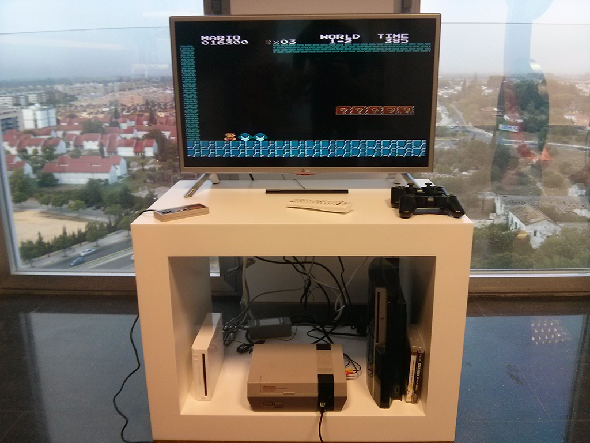
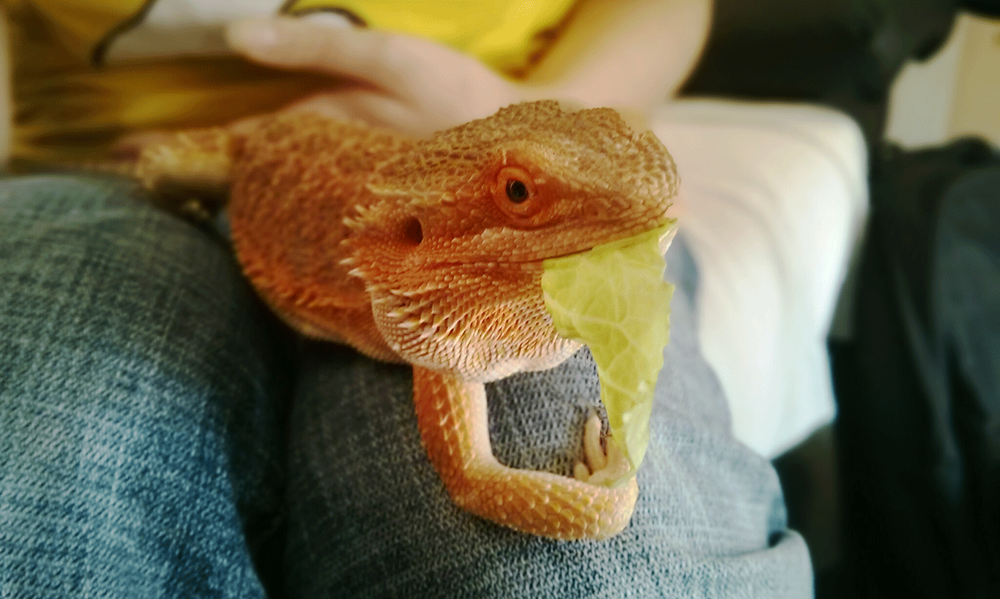

Ángel M Miguel
Estudiante de telecomunicaciones, escribo y desarrollo en mi tiempo libre. Empecé en la programación web en 2010 trasteando con HTML y CSS. Ese mismo año conocí a Fran, un gran amigo con el que colaboré en varios proyectos y aprendí sobre PHP en su empresa Eenda Works.
Tras dos años de trabajo con Fran, tomamos caminos distintos y comencé Laux que nació en enero de 2013 para obligarme a aprender sobre experiencia de usuario.
Parece que la idea ha ido bastante bien, pues tras un tiempo trabajando en desarollo móvil con Android, empecé a trabajar en Redborder como desarrollador de experiencia de usuario y software. Actualmente entre carreras de drones, disparos y algunas partidas de ping pong, dentro de un gran equipo (con muy buenos amigos) me encargo de programar en Ruby on Rails y estructurar y conceptualizar en la interfaz las ideas que se nos van ocurriendo.
También andan por mi cabeza varias ideas a la espera de tener un poco de tiempo para ponerlas en práctica, y alguna que otra desarrollada pero oculta, como ocurre con Arpil, que espero que volváis a tener pronto por el market ;).
Amante de los videojuegos, ya sean nuevos o antiguos, intento ir completando mi pequeña colección. Desde NES a Xbox360, voy recuperando algunas de esas reliquias que jugaba cuando era pequeño en casa de mis amigos. También intento salvar de vez en cuando alguna consola que la dan por "fallecida", aquí tenéis una NES que ahora forma parte del area de descanso de la oficina.

Para acabar, los que me conocéis por twitter ya lo sabréis, pero los que no (aquí tenéis @Laux_es) y os preguntéis qué es el favicon, es mi mascota.
Su nombre es Franky y es un Dragón barbudo o Pogona. Es muy tranquila y se lleva bien con todo el mundo. Creo que se merece un hueco en mi blog jeje.

Sin más, esta es un poco mi "biografía". Cualquier cosa que queráis no dudéis en contactar conmigo por Twitter o por email.
Ya no me dejo nada, así que voy a hacer un y a seguir ;).